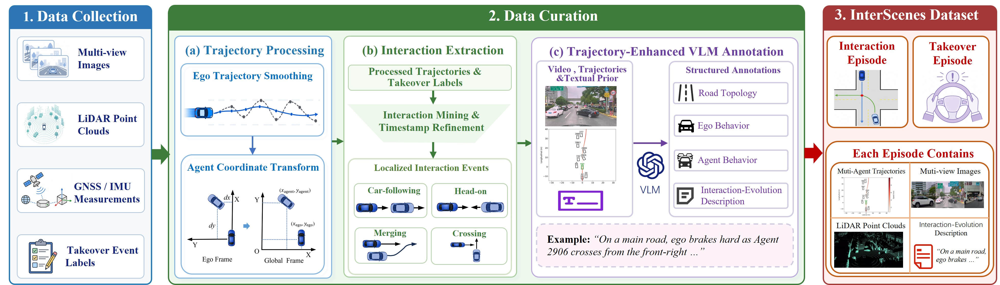

InterScenes
A Real-World Multimodal Interaction-Evolution Dataset for VLA Evaluation and Safety Validation in Autonomous Driving
Overview

Overview of the InterScenes construction framework, including multimodal data collection, trajectory processing, interaction extraction, and trajectory-enhanced VLM annotation.